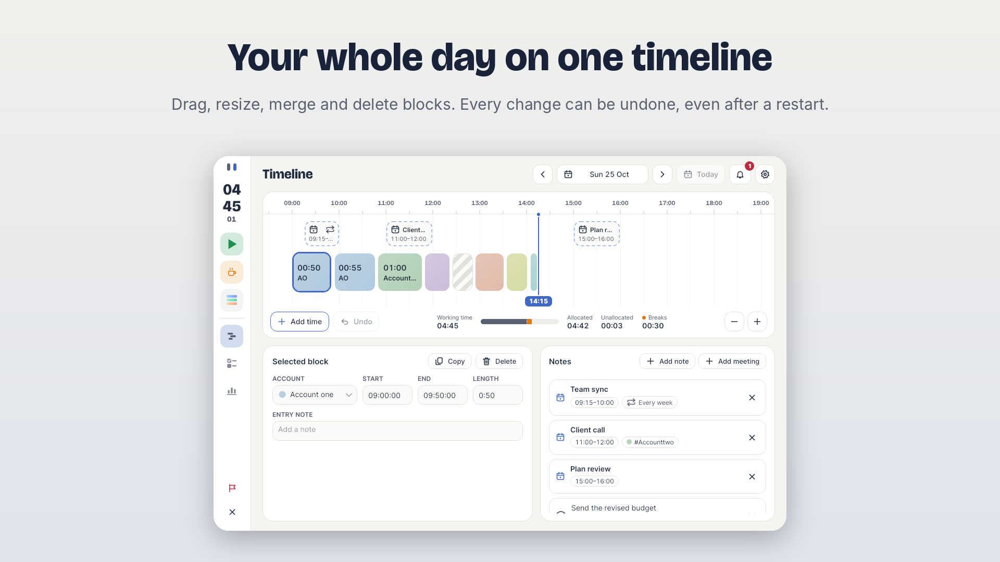
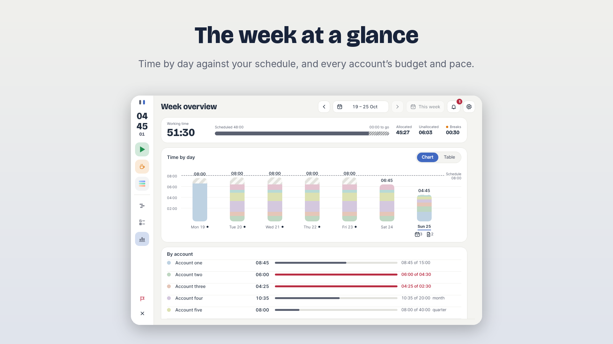
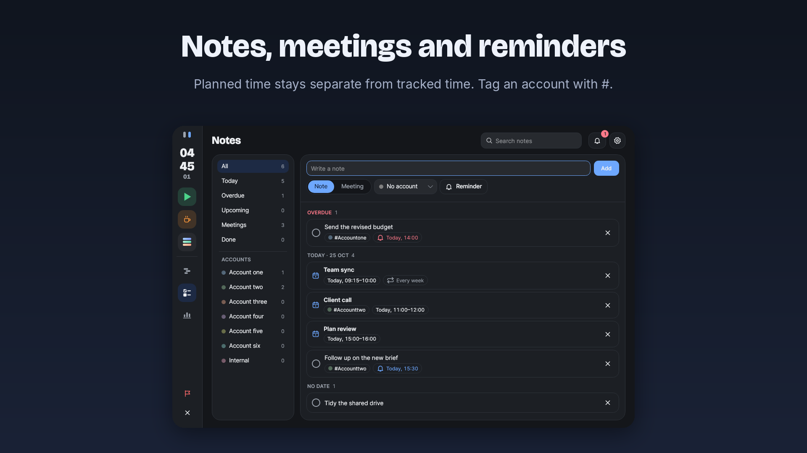
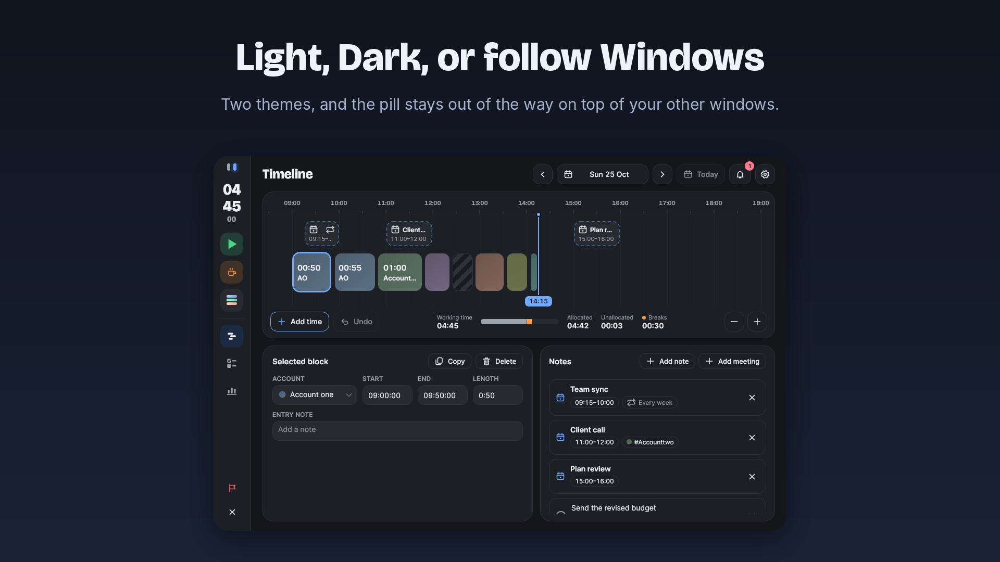
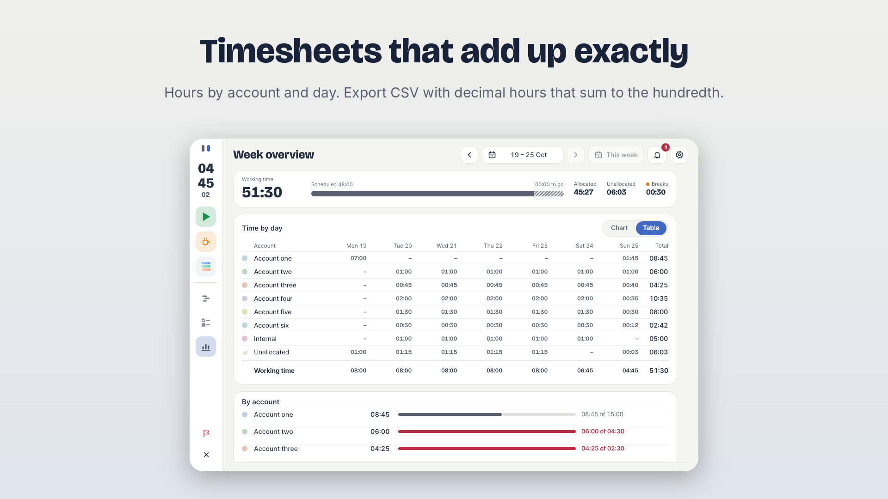
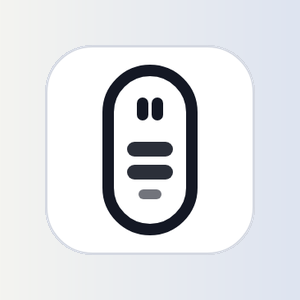
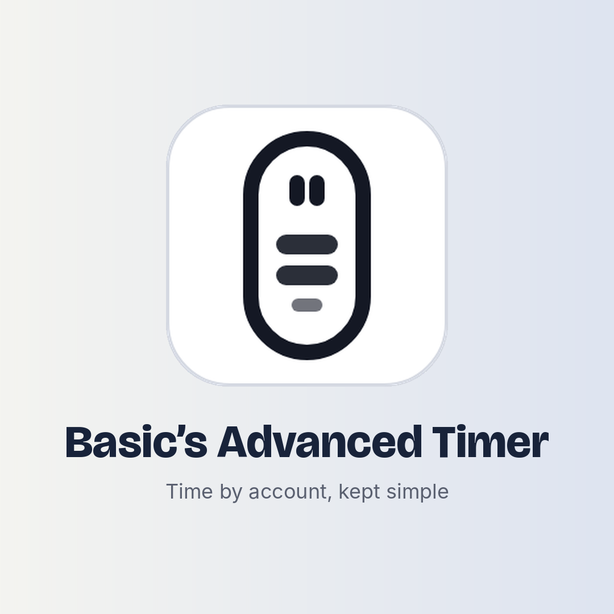
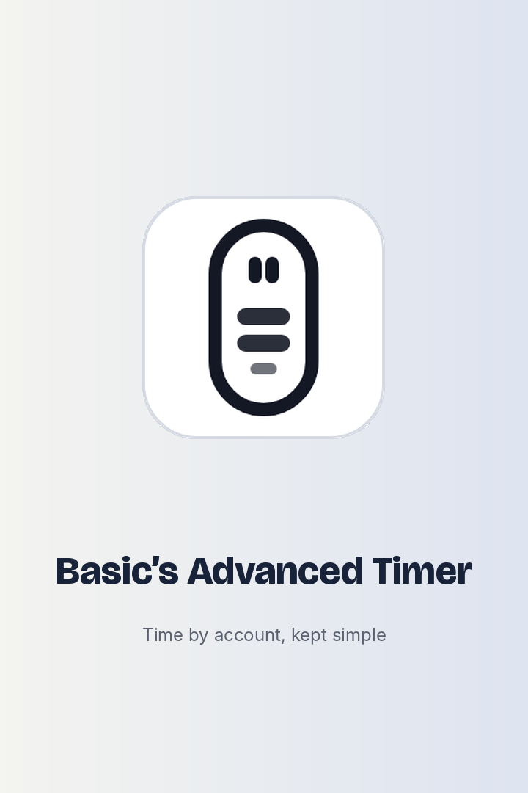

Everything Partner Center will ask for, written out and ready to paste. Nothing has been submitted. The wording is a first draft for you to edit, and limits are the ones I know of, so check them against Partner Center when you paste. Screenshots are real captures of the app from its own renderer with demo data, composed at 1920 by 1080, and should be retaken on Windows before submission.
Basic’s Advanced Timer
A small always-on-top timer for tracking time against client accounts. See your day on a timeline, your week at a glance, keep notes and meetings, and export timesheets that add up exactly. Your records stay on your PC.
Basic’s Advanced Timer is a quiet, always-on-top time tracker for people who bill or report time by client account. A small pill sits on top of your other windows. Press it to start, pause or switch account, or take a break, without opening anything. Open the dashboard when you want to look back. TRACK • Start, pause and switch between your accounts, with Break and Lunch. • Set working hours by weekday, days off and one-off starts. Time past your usual finish is shown as overtime. • Set budgets by day, week, month or quarter, and see each account’s pace. REVIEW • A scrollable, zoomable timeline of the day. Drag blocks to move or resize them, add, merge and delete time, and undo any change, even after a restart. • A week overview: a chart or table of time by day against your schedule, with each account’s budget. • Notes, planned meetings and reminders, with repeats. Planned time is never counted as tracked time. EXPORT • Detail and Summary CSV files for any week or month, with decimal hours that add up exactly. MADE TO STAY OUT OF THE WAY • Light and Dark themes, or follow Windows. Choose the size of the pill. • Optional start with Windows, and a notification-area icon. • No sign-in and no online account. Records are kept in a local database on your PC, with daily backups. Basic’s Advanced Timer is built for Windows 10 and 11.
First Microsoft Store release. A new vertical pill and dashboard with a day timeline, week overview, notes and meetings with reminders, Light and Dark themes that follow Windows, and exact CSV timesheet export.
| Field | Draft |
|---|---|
| Category | Productivity |
| Copyright and trademark info | © 2026 Basically |
| Publisher display name | Basically (as in the workflow and manifest) |
| Package identity | Basically.BasicsAdvancedTimer, publisher CN=BF422802-B4CA-4B00-A09A-2EDA3315C0DE (already set in the workflow) |
| System requirements | Windows 10 version 2004 (build 19041) or later, 64-bit. The manifest sets this minimum. I have not listed memory or disk figures because I have not measured them. |
| Age rating | Answer the questionnaire with No throughout: no violence, no user-generated content shared with others, no online interaction, no purchases. That should give the lowest rating. |
1920 by 1080 PNG, five of the ten the Store allows. The window itself is a true render at its real size, not stretched.





Drawn from the app icon. The tagline is a placeholder.



| Asset | Size | Status |
|---|---|---|
| Screenshots | 1366 × 768 or larger, PNG (1920 × 1080 here) | Draft, five of up to ten |
| App tile icon | 300 × 300 (1:1) | Draft above; the manifest tiles in StoreAssets are already cut from the icon |
| Box art | 1080 × 1080 (1:1) | Draft above |
| Poster art | 720 × 1080 (2:3) | Draft above |
| Hero image | 1920 × 1080 (16:9), optional | Not made. Screenshot 1 could serve |
| Trailer | Optional | None |
Basic’s Advanced Timer is a .NET desktop application (Avalonia UI) packaged as an MSIX with the runFullTrust capability, because it is a normal Win32 desktop program rather than a UWP app. It needs full trust for: always-on-top borderless windows that it keeps in front, a notification-area (tray) icon, a local SQLite database and daily backups in its own data folder, and an optional startup task. It does not read or write user files outside its own data folder (exports are written into a folder there), and the application’s own code makes no network connections.
No sign-in or account is needed. On first launch a four-step setup asks for client accounts, working hours and display options; press Skip setup to go straight in. Start tracking from the pill (press the green tile, or open Accounts and press an account). The dashboard opens when the clock on the pill is pressed. The sample-data demo is not part of this package. Start with Windows is off by default and is switched on in Settings, Behaviour.
The app collects nothing and sends nothing. I searched the app’s own source: it contains no network calls, telemetry or analytics (I did not inspect the two shared packages it uses, which are local engine and database code). Records, settings, backups and CSV exports all stay in the package’s local data folder.